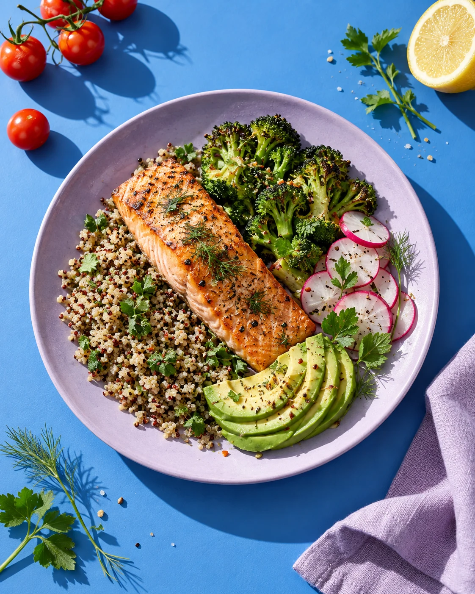

день
на вкус.

Fresh
Яркий, тёплый и аппетитный. Крупная фотография, солнечный жёлтый и понятный путь от дневника до заказа.
Новые концепции сайта. Один продукт, два разных характера. Переключение RU / EN доступно в каждом варианте.
Отдельные концепции для обсуждения. Основной сайт qchat.nl не изменён.